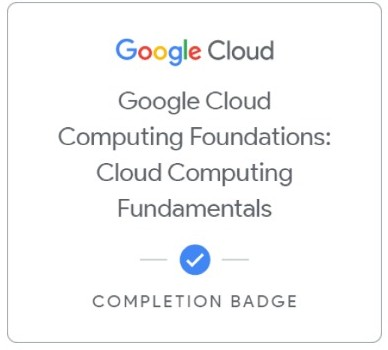

SOBRE MÍ
Recién egresada de TSU en Tecnologías de la Información y próxima a concluir la Ingeniería en Software. Cuento con experiencia en el desarrollo de aplicaciones web, móviles y multiplataforma.
Manejo de bases de datos relacionales y no relacionales, así como despliegue de aplicaciones en la nube con AWS y experiencia en el uso de Google Cloud. Experiencia en proyectos con dispositivos inteligentes, como IoT y WearOS. Me destaco por mi adaptabilidad, aprendizaje rápido y capacidad para resolver problemas, con un enfoque colaborativo y orientado a resultados.
EDUCACIÓN
TSU en Tecnologías de la Información y Desarrollo de Software Multiplataforma
Universidad Tecnológica de Durango
2022 - 2024
Ingeniería en Desarrollo y Gestión de Software
Universidad Tecnológica de Durango
2024 - Actualidad
HABILIDADES
- Trabajo Colaborativo
- Resolución de Problemas
- Aprendizaje y Adaptabilidad
- Organización
- Pensamiento Crítico y Analítico
IDIOMAS
Inglés B1
INSIGNIAS

.png)
TECNOLOGÍAS Y HERRAMIENTAS
Lenguajes de Programación: HTML, CSS, JavaScript, Python, Kotlin, Java.
Frameworks y Librerías: React, React Native, Flutter, Node.js, Spring Boot (para Backend), Bootstrap, Tailwind CSS, Express.js
Bases de Datos: PostgreSQL, MySQL, MongoDB, Supabase
Cloud & DevOps: AWS, Google Cloud, Git, GitHub, GitLab, GitHub Pages
Sistemas Inteligentes: Raspberry Pi, Android WearOS
Análisis de Datos: Excel, R
EXPERIENCIA
PROYECTOS ACADÉMICOS Y PERSONALES
Desarrollo de aplicaciones web, móviles e IoT utilizando un stack robusto que incluye React, React Native, Flutter, Kotlin y Java con Spring Boot. El backend con Node.js y Express.js, y las bases de datos incluyen PostgreSQL, MySQL, MongoDB y Supabase. Experiencia en despliegue en la nube con AWS y Google Cloud, gestión de código con Git/GitHub/GitLab. Además, conocimiento en Sistemas Inteligentes (Raspberry Pi, Android WearOS) y análisis de datos (Excel, Power BI).
CONTACTO Y REDES
Cel: (618) 163 55 14
Email: andreagal2004@gmail.com
GitHub: https://github.com/AndreaGarciaG00
LinkedIn: Perfil de LinkedIn